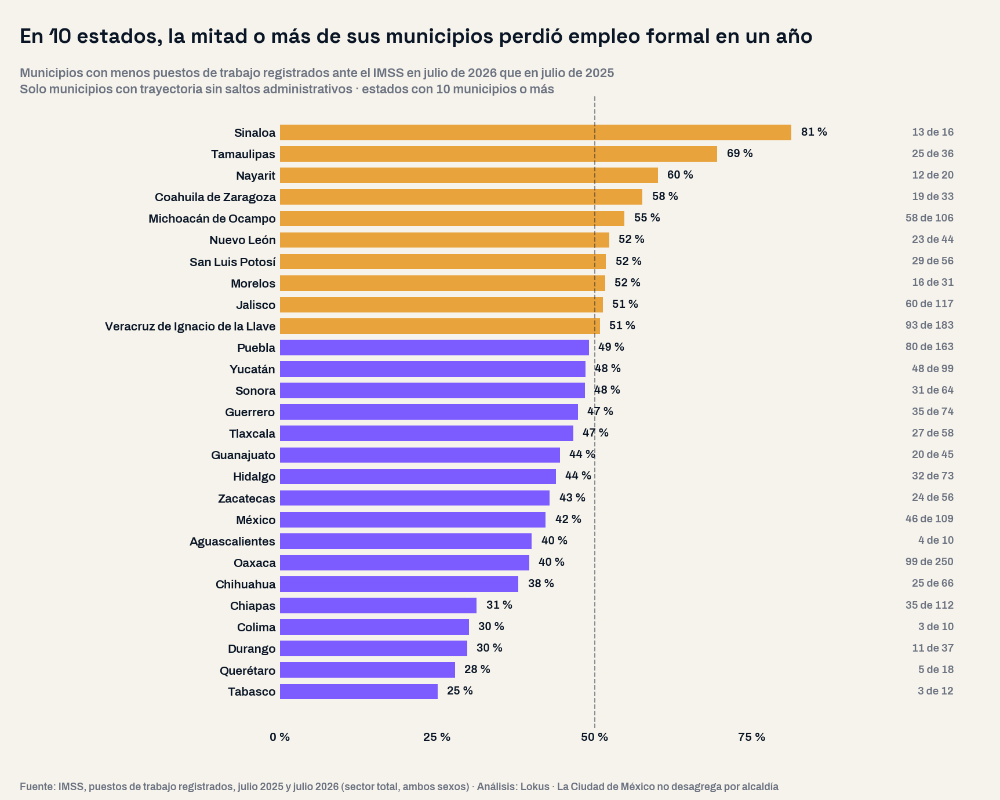
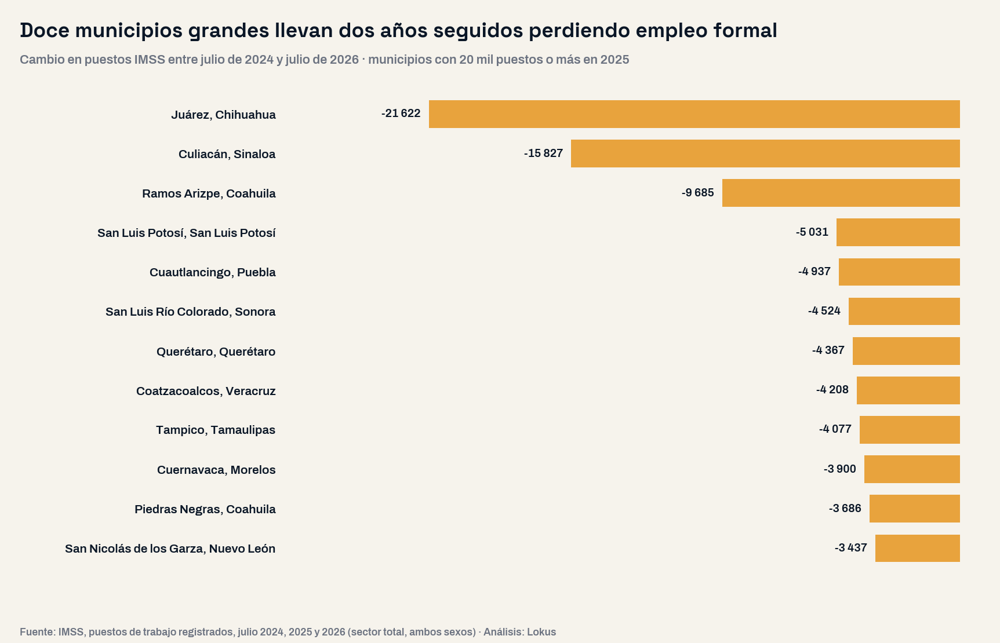

La pregunta con la que arrancó este análisis fue abierta: ¿qué municipios ganaron y cuáles perdieron empleo formal en el último año? Sin preseleccionar región: todos los municipios con registro comparable en julio de 2025 y julio de 2026, ordenados por el cambio en puestos registrados ante el IMSS. El dato nacional dice una cosa; el mapa municipal dice otra.
Un país que crece y un mapa que se parte a la mitad
En julio de 2026 el IMSS registró 22,760,154 puestos de trabajo en el país, 326,987 más que en julio de 2025: un crecimiento de 1.5% anual. Es la cifra que se cita cada mes. Al bajarla a los municipios, el panorama se parte: de los 2,066 municipios con registro comparable en ambos julios, 950 ganaron puestos, 971 los perdieron y 145 quedaron igual. Casi la mitad del país municipal está del lado equivocado de una cifra nacional positiva.

Antes de leer el mapa: el IMSS registra patrones, no territorios
El dato municipal del IMSS tiene una trampa que ningún tablero advierte: la geografía es la del registro del patrón, no la del centro de trabajo. Cuando una empresa grande cambia su registro, un municipio entero salta de un mes a otro sin que nadie haya contratado a nadie. Para separar el ruido de la tendencia se revisó la serie mensual de cada municipio y se marcaron los meses con un movimiento de más de mil puestos y al menos cinco veces mayor que la volatilidad normal de ese municipio, dejando fuera el vaivén estacional de diciembre y enero.
107 municipios traen ese tipo de movimiento y entre todos explican 77,873 puestos del saldo municipal. Tres ejemplos: Mexicali sumó 29,144 puestos en un solo mes cuando su movimiento mensual típico es de 1,719; Ciudad Valles sumó 17,784 en julio de 2026, más de lo que se movía en un año; Omealca, en Veracruz, pasó de 138 puestos a 8,865 en un mes. En los tres casos el nivel se quedó en la nueva meseta, la huella de un registro que cambió de domicilio. Todo el análisis que sigue excluye esos 107 municipios y trabaja con los 1,919 que tienen serie mensual completa de los trece meses y ningún salto.
Diez estados con la mitad de sus municipios en rojo
Con el universo depurado, 894 municipios ganan empleo formal y 888 lo pierden. Los que pierden no son un puñado de casos marginales: concentran hoy 6,419,507 puestos de trabajo, el 47% de todo el empleo formal municipal del país. Y la geografía no es la que suele contarse.
| Entidad | Municipios en rojo | Proporción | Saldo estatal de puestos |
|---|---|---|---|
| Sinaloa | 13 de 16 | 81% | −7,964 |
| Tamaulipas | 25 de 36 | 69% | −3,642 |
| Nayarit | 12 de 20 | 60% | +359 |
| Coahuila de Zaragoza | 19 de 33 | 58% | −9,715 |
| Michoacán de Ocampo | 58 de 106 | 55% | −21 |
| Nuevo León | 23 de 44 | 52% | +27,486 |
| San Luis Potosí | 29 de 56 | 52% | −1,446 |
| Morelos | 16 de 31 | 52% | −4,802 |
| Jalisco | 60 de 117 | 51% | +19,171 |
| Veracruz de Ignacio de la Llave | 93 de 183 | 51% | −1,335 |
La tabla obliga a una lectura incómoda para los informes de gobierno: un estado puede sumar empleo formal y tener a la mayoría de sus municipios perdiéndolo. Nuevo León gana +27,486 puestos con 23 de sus 44 municipios en rojo; Jalisco gana +19,171 con 60 de 117; Michoacán queda empatado (−21) con 58 de 106 a la baja. El saldo estatal suma dos historias opuestas, y la política local se diseña en la que no aparece en el comunicado.
La mitad del crecimiento cabe en 23 municipios
Del lado del alza, la concentración es todavía más marcada: de los 894 municipios que ganan empleo formal, 23 concentran la mitad del aumento y 86 concentran el 80%. Encabezan Ecatepec de Morelos (+38,279 puestos), Tlalnepantla de Baz (+16,155), Zapopan (+10,713), Tepotzotlán (+10,618) y Nezahualcóyotl (+6,626). Para el resto del país, el crecimiento del empleo formal es una noticia que ocurre en otro lado.
458 municipios llevan dos años en rojo
Un año malo puede ser una planta que cerró. Dos años seguidos es una trayectoria. Comparando julio de 2024, julio de 2025 y julio de 2026, 458 municipios perdieron empleo formal en los dos periodos consecutivos: hoy suman 3,471,270 puestos y en dos años perdieron 231,438. Entre ellos hay municipios grandes, con base industrial y con administraciones que planean sobre supuestos de crecimiento.

| Municipio | Puestos jul-2024 | Puestos jul-2026 | Cambio | Salario base diario 2026 |
|---|---|---|---|---|
| Juárez, Chihuahua | 496,403 | 474,781 | −21,622 | $774.82 |
| Culiacán, Sinaloa | 259,772 | 243,945 | −15,827 | $583.92 |
| Ramos Arizpe, Coahuila de Zaragoza | 120,935 | 111,250 | −9,685 | $929.01 |
| San Luis Potosí, San Luis Potosí | 324,680 | 319,649 | −5,031 | $720.49 |
| Cuautlancingo, Puebla | 58,105 | 53,168 | −4,937 | $898.20 |
| San Luis Río Colorado, Sonora | 32,323 | 27,799 | −4,524 | $653.02 |
| Querétaro, Querétaro | 443,766 | 439,399 | −4,367 | $753.99 |
| Coatzacoalcos, Veracruz de Ignacio de la Llave | 58,391 | 54,183 | −4,208 | $629.32 |
| Tampico, Tamaulipas | 81,608 | 77,531 | −4,077 | $582.14 |
| Cuernavaca, Morelos | 105,449 | 101,549 | −3,900 | $615.99 |
| Piedras Negras, Coahuila de Zaragoza | 49,487 | 45,801 | −3,686 | $728.51 |
| San Nicolás de los Garza, Nuevo León | 165,679 | 162,242 | −3,437 | $693.32 |
Ese contraste, calculado sobre los 112 municipios grandes del universo depurado, no estaba en la pregunta inicial. No importa solo cuántos puestos se mueven, sino de qué tipo: la pérdida se concentra en plazas de cotización alta y la ganancia llega en plazas de cotización menor. Para una tesorería municipal, esa diferencia se siente antes en la actividad económica local que en el número de empleos.
Implicaciones para la gestión pública
1. El dato nacional no describe al municipio. Un plan municipal de desarrollo que justifique sus metas de empleo con la cifra nacional del IMSS puede estar describiendo lo contrario de lo que ocurre en su territorio. La consulta correcta es la serie municipal, mes a mes. Nuestra guía del plan municipal de desarrollo parte justo de este principio: cada diagnóstico con el dato de su propio territorio.
2. Depurar antes de celebrar o alarmarse. Si un municipio salta o se desploma de un mes a otro, lo primero es revisar la serie: 107 municipios del país traen movimientos que corresponden a registros patronales, no a contrataciones. Informar un salto administrativo como creación de empleo es un riesgo de rendición de cuentas.
3. Dos años en rojo exigen diagnóstico sectorial. Los 458 municipios con dos periodos consecutivos a la baja necesitan saber qué sector se contrae: el IMSS publica la apertura por división de actividad y por tipo de puesto.
4. El empleo formal no es el empleo del municipio. El registro del IMSS deja fuera el trabajo informal, el sector público y el ISSSTE. En un país con 55.1% de informalidad, un municipio puede perder puestos formales sin perder ocupación, como mostramos en el cruce de informalidad y empleo formal de las 32 entidades.
5. Menos empleo formal es menos base económica local. Perder plazas de cotización alta reduce la derrama de nómina que sostiene el comercio local y la recaudación propia. La mitad de los municipios no genera ni 5 de cada 100 pesos de su presupuesto: los que además pierden empleo formal enfrentan las dos presiones a la vez.
Conclusión
Que el país sume empleo formal es una buena noticia agregada. Pero el agregado esconde un mapa partido: casi la mitad de los municipios perdió puestos, 458 llevan dos años perdiéndolos, la mitad del alza cabe en 23 municipios y el empleo que se pierde paga más que el que llega. Para un gobierno municipal, la pregunta útil no es cuánto creció el empleo formal en México, sino de qué lado del mapa está su territorio y desde cuándo. La respuesta se publica cada mes y se consulta municipio por municipio.
¿De qué lado del mapa está tu municipio?
En la plataforma de GDI puedes consultar los puestos de trabajo registrados ante el IMSS mes a mes para tu municipio, su salario base de cotización y su composición de puestos permanentes y eventuales, junto con la medición de pobreza, las finanzas públicas y la demografía, para armar el diagnóstico de tu plan de desarrollo con fuentes oficiales integradas.
Explorar mi territorioPreguntas frecuentes
¿Cuántos municipios perdieron empleo formal en el último año?
De los 2,066 municipios con registro comparable entre julio de 2025 y julio de 2026, 971 perdieron puestos de trabajo registrados ante el IMSS, 950 ganaron y 145 quedaron igual. Depurando los municipios con movimientos administrativos de un solo mes, quedan 888 municipios en rojo, que concentran el 47% del empleo formal municipal del país.
¿Por qué el empleo formal crece en el país y baja en la mitad de los municipios?
Porque el crecimiento está muy concentrado: 23 municipios aportan la mitad del alza y 86 aportan el 80%. El resto del universo municipal se reparte pérdidas pequeñas. Además, la Ciudad de México —que sumó 119,136 puestos— no se desagrega por alcaldía, de modo que su crecimiento no aparece en el mapa municipal.
¿Los datos municipales del IMSS miden dónde trabaja la gente?
No exactamente. El IMSS ubica los puestos en el municipio donde está registrado el patrón, no donde está el centro de trabajo ni donde vive la persona. Por eso un cambio de registro puede mover miles de puestos de un municipio a otro en un solo mes: en este análisis se detectaron 107 municipios con movimientos de ese tipo y se excluyeron.
¿Qué municipios llevan dos años perdiendo empleo formal?
458 municipios perdieron puestos tanto de julio de 2024 a julio de 2025 como de julio de 2025 a julio de 2026. Entre los de 20 mil puestos o más destacan Juárez (−21,622 en dos años), Culiacán (−15,827), Ramos Arizpe (−9,685), San Luis Potosí y Cuautlancingo.
Datos técnicos
Fuentes: IMSS, puestos de trabajo registrados, julio de 2024, julio de 2025 y julio de 2026, sector total y ambos sexos, niveles nacional, estatal y municipal; consultados en la capa de datos validada de Lokus. Universo completo: los 2,066 municipios con registro comparable en julio de 2025 y julio de 2026, sin preselección. De ellos, 2,026 tienen además la serie mensual completa de los trece meses —base de la depuración— y 1,910 tienen registro en julio de 2024.
Definiciones: puestos de trabajo = puestos registrados ante el IMSS, no personas; una persona con dos empleos formales cuenta dos veces. Salario base de cotización = salario diario promedio con el que se registran esos puestos, en pesos nominales. Municipios en rojo = municipios con menos puestos en julio de 2026 que en julio de 2025.
Método: comparación julio contra julio para neutralizar la estacionalidad de los puestos eventuales. Depuración de movimientos administrativos: se revisó la serie mensual de cada municipio entre julio de 2025 y julio de 2026 y se marcó el municipio cuando algún mes registró un cambio de al menos 1,000 puestos y a la vez cinco veces mayor que su propia volatilidad mensual mediana, excluyendo las transiciones de diciembre y enero. 107 municipios quedaron marcados y fuera del análisis; las cifras del universo completo se reportan por separado. Las medianas de salario se calculan sobre los 112 municipios con 20 mil puestos o más del universo depurado.
Advertencias metodológicas: el IMSS registra empleo formal privado y ubica cada puesto en el municipio de registro del patrón; no incluye trabajo informal, sector público ni ISSSTE, por lo que estas cifras no son «el empleo total» de un municipio. La Ciudad de México no se desagrega por alcaldía: sus 119,136 puestos adicionales aparecen en el dato nacional y estatal, no en el municipal. Las cifras de salario y masa salarial son nominales y no están deflactadas.
Nota: el análisis partió de una pregunta abierta y del universo municipal completo ordenado por la métrica; los grupos y el patrón emergen de los datos, no de una clasificación previa.
Análisis: GDI — Gobierno Digital e Innovación · Fecha de análisis: 15 de septiembre de 2026 · gobiernodigitaleinnovacion.com